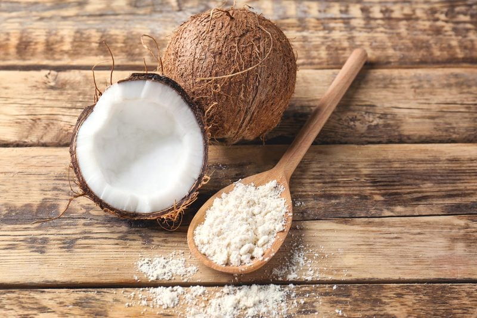
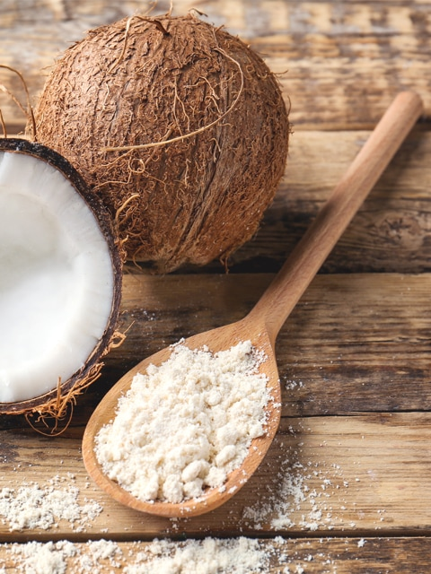

Coconut Flour – from dried coconut
Coconut Flour
In several of Nouveau Raw’s recipes, you will see coconut flour being used. Even as you travel the web of raw recipes, you will see other chefs using it as well. But before you run to the cabinet and measure out the flour, stop and make sure that you know exactly what they are referring to. Coconut flour can mean one of two things; they are either using raw coconut flour that you can purchase at the grocery store, or they are making their own.

Here are just a few ways that you can make coconut flour:
- You can make homemade coconut flour using dried coconut flakes and blitzing them to a powder in a blender. This flour has a higher fat content and won’t be as drying to a recipe.
- Highly processed, ultra-white coconut flour. This flour isn’t raw, and I don’t recommend it.
- Store-bought raw coconut flour. I recommend the Coconut Secret brand.
- Raw coconut flour made from coconut milk pulp, which is made by placing dried coconut and water in a blender. After blending, strain the milk through a nut bag. The stuff that is left in the bag is called pulp. Spread this on a dehydrator sheet, dry, then process it into fine coconut flour. This type of flour has less fat.
I will always be using one of two types of coconut flour; store-bought raw coconut flour or the type of flour that is made from dried coconut that has been blitzed into a powder. Keep in mind that they can’t be substituted for one another. The reason for this is that the store-bought coconut flours absorb a lot of moisture from the recipe, which can make the outcome dry and crumbly. And as I mentioned above, when I powder dried coconut, it is higher in fat; therefore, it won’t absorb the moisture in your recipes. I don’t make coconut flour from coconut pulp only because I never have enough of it on hand.
What You Don’t Know about Raw Coconut Flour:

It is 100 percent gluten-free: Since there is no gluten in coconut flour, this ideal for anyone with gluten intolerance.- Coconut flour is a high fiber food: Contains more fiber than any other flour — almost 58 percent more, which makes reaching your daily fiber intake possible!
- Can help assist in weight loss: Since dietary fiber assists in controlling glucose levels, it may help control blood sugars.
- Very low in carbs.
- It has a mildly sweet coconut taste.
- Sometimes it will be necessary to increase the liquid content in coconut flour recipes. Coconut flour loves moisture and will absorb a lot of the liquids in recipes.
- Dried coconut is an excellent source of copper, which helps to maintain the health of your brain. It activates enzymes responsible for the production of neurotransmitters.
- Always use unsweetened dried coconut, sweetened dried coconut has 2 teaspoons of added sugar per ounce!
- Dried coconut is cholesterol-free, very low in sodium, and high in manganese.
Homemade Coconut Flour with Dried Coconut:
Ingredients:
Yields 1/2 cup powdered
Preparation:
- Place the shredded coconut in either a blender, spice, or coffee grinder. Blend until it reaches a powder form. That’s it!
- Store in an airtight container until ready to use.
© AmieSue.com